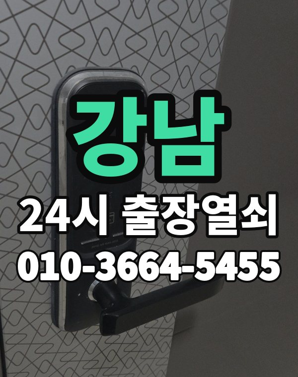

강남은 이런 곳입니다
강남구는 대치, 개포, 도곡 아파트 단지와 역삼, 논현동 원룸과 오피스텔, 사무실이 모두 많은 곳입니다.
오피스텔은 건물 출입과 집 현관 두 번 확인이 필요합니다.

강남구 출장 가는 동네
- 신사동
- 압구정동
- 청담동
- 삼성동
- 대치동
- 역삼동
- 도곡동
- 개포동
- 일원동
- 수서동
- 세곡동
- 논현동
신사동 출장열쇠, 압구정동 열쇠집처럼 동네 이름으로 찾으셨어도 같은 곳입니다.
적혀 있지 않은 동네도 강남구 안이면 다 갑니다.
강남에서 맡기실 수 있는 일
강남 출장, 이렇게 알려주세요
새벽 시간 오피스텔 문 잠김 연락이 많은 편입니다.
건물 출입이 가능한지, 주차할 곳이 있는지 같이 알려주시면 빨리 갑니다.
삼성역, 선릉역, 역삼역, 대치역, 압구정역 근처라고 말씀해 주셔도 위치 잡기가 쉬워집니다.
가까운 역이나 큰 건물, 단지 이름을 같이 알려주세요.
- 도로명 주소나 건물 이름
- 도어락 사진 한 장 (문자로)
- 신분증, 우편물 등 사시는 걸 확인할 것
전화부터 작업까지 순서는 이용안내에 적어 두었습니다.
강남 출장열쇠 관련 글
- 강남 압구정동 현관 방범 점검, 문 앞에서 10분이면 되는 생활 체크
- 강남구 청담동 아이나 반려견이 안에 있는데 현관이 잠겼을 때 순서대로 할 일
- 강남구 대치동 출장열쇠 부르기 전, 사진 한 장과 메모 세 줄로 준비 끝내기
- 강남구 도곡동 분리수거·택배 가지러 나왔다가 문이 잠겼다면 이렇게 해결하세요
- 강남 개포동 부모님 댁 도어락, 어르신이 쓰기 편하게 바꿔 드리는 점검 포인트
- 강남구 일원동 오래된 현관문, 문틀 처짐과 경첩 문제로 안 열릴 때 살펴볼 곳
- 강남 논현동 원룸·오피스텔 카드키와 태그를 잃어버렸을 때 등록 정리 순서
- 강남 삼성동 현관문이 안 열릴 때 소리와 반응으로 원인 가려내는 법
- 강남구 세곡동 현관문 쾅 소리와 삐걱임, 뻑뻑한 문은 어디부터 손볼까
- 강남구 신사동 가사도우미·돌봄 선생님께 도어락 임시 비밀번호 알려줄 때 정리법
- 강남 수서동 현관문 개방 뒤 바로 해 둘 점검과 다시 안 막히는 습관
- 강남 역삼동 오피스텔 도어락 배터리 방전, 번호판이 꺼졌다면 비상 전원부터
강남 출장열쇠 자주 묻는 질문
강남구 끝쪽 동네도 오시나요?
신사동, 압구정동, 청담동, 삼성동, 대치동, 역삼동 등 강남구 전 지역 갑니다. 적혀 있지 않은 동네도 강남구 안이면 출동합니다.
강남 늦은 시간 출장도 되나요?
밤이든 새벽이든 받습니다. 어디인지 들으면 언제쯤 도착하는지 바로 말씀드립니다.
문을 못 열면 비용을 내나요?
열지 못하면 비용은 없습니다. 작업 전에 금액을 듣고 정하시면 됩니다.
집주인이 아니어도 열어 주나요?
사시는 분인지 신분증, 주소가 나온 우편물, 관리사무소 확인 중 하나로 확인한 뒤 엽니다.
강남 도어락 수리나 교체도 하시나요?
네, 합니다. 문에 맞는 제품인지 보고, 고칠 수 있으면 수리를 먼저 권합니다.